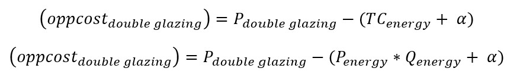
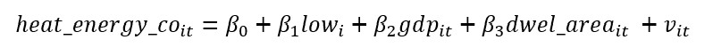
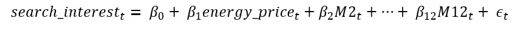

As energy prices rise, unfortunately for many, living standards will simply drop. But for others, will the temporary rise in energy prices increase demand for energy-saving goods?
When the opportunity cost of a good decreases, demand should increase. Our question then asks if households consider the price of energy negatively in the opportunity cost of energy-saving goods. For instance, double glazing
Where TC_energy is the cost of extra energy you need with single glazing.
Even if households don’t typically change attitudes to energy-saving goods with fluctuations in energy prices, given how large the recent price rise has been relative to the formerly largest rises, this occasion could be an exception (Chart 1).
Our question ask if households consider P_energy in the cost of energy-saving goods, but first lets test if extra energy cost generally (TC_energy) is considered, by exploiting differences in Q_energy across countries with different temperatures.
If households consider extra energy cost in the cost of energy-saving goods, colder countries (who save more energy than warmer countries with heat-saving goods (higher Q_energy)) would purchase more heat-energy-saving goods. We can test this because if they did purchase more, they would have more space-heating efficient homes. We can proxy for space-heating efficiency with climate-corrected energy consumption on space heating. Because the need for heating (climate) is corrected, greater consumption implies worse efficiency. Chart 2 shows countries with colder winters tend to have greater consumption.
Chart 3 illustrates this more directly.
Running pooled OLS on the model
With:
-low_i: average low of winter months
-heat_energy_co_it: climate-corrected energy consumption on space heating
-gdp_it: GDP per capita (controlling for affordability of heating)
-dwel_area_it: dwelling area (controlling for the area to heat)
We get a statistically significant (1% level) positive coefficient on temp.
This suggests households consider extra energy costs generally (TC_energy) in the cost of energy-saving goods, but now, let’s test if they consider the price of energy (P_energy) specifically, using Google Trends data on interest in search terms related to energy-saving goods.
It is difficult to observe patterns in the data due to noise. Taking 20 observation moving averages better illustrates the data.
There is clearly a seasonal component to the data. However, by highlighting October in each year, we see that the October following the Russian invasion of Ukraine (when energy prices began to rise), interest was higher than previous Octobers. Seasonally adjusted data illustrates this change more explicitly.
It appears there has been a spike in the majority of these terms in the first winter following the Russian invasion of Ukraine.
Table 1 shows OLS results on the model
For each select search term with a set of month dummies to control for seasonality.
We see positive statistically significant coefficients at the 1% level of energy prices on interest for all terms but "double glazing", indicating interest in energy-saving goods increases with energy prices.
Chart 7 illustrates this seasonally controlled relationship between energy prices and interest in our select search terms.
Temperature data was scraped from currentresults.com using pandas read_html().To overcome scraping prevention measures, I used the python ‘requests’ library to automate HTTP requests by specifying a header containing a ‘user-agent’ identifier. Further difficulty arose from currentresults.com keeping data on different pages. Consequently, I used for-loops to iteratively scrape and clean tables from the different web pages.
Data on energy consumption and dwelling floor area was obtained from the ODYSEE database in CSV format after requesting access. Difficulty came from documents only having ISO2 country codes and not country names. Consequently, I used the ‘country_converter’ python library to convert to country names and join with temperature data.
Google Trends data on the interest of search terms was obtained using the PyTrends python library, an “unofficial API” of Google Trends. I used this library in combination with for-loops to efficiently gather data on multiple search terms. To avoid getting blocked by Google’s bot recognition system I added a ‘sleep’ timer between for-loop iterations.
Seasonal adjustment of google trends data was conducted using the python statsmodels library. I used for-loops to efficiently iterate over regressions of each search term.
Data on historical energy price rises was accessed via ONS API using for-loops to batch download and clean data on multiple energy indices at once.
I have produced results consistent with households considering both the price of energy, and cost of extra energy generally, negatively, in the opportunity cost of energy-saving goods through examining the relationships between price and search interest, and temperature and space-heating efficiency respectively. This may not translate into greater demand for energy-saving goods, but it does suggest this.